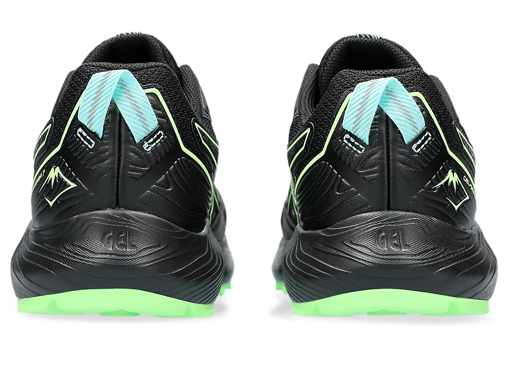
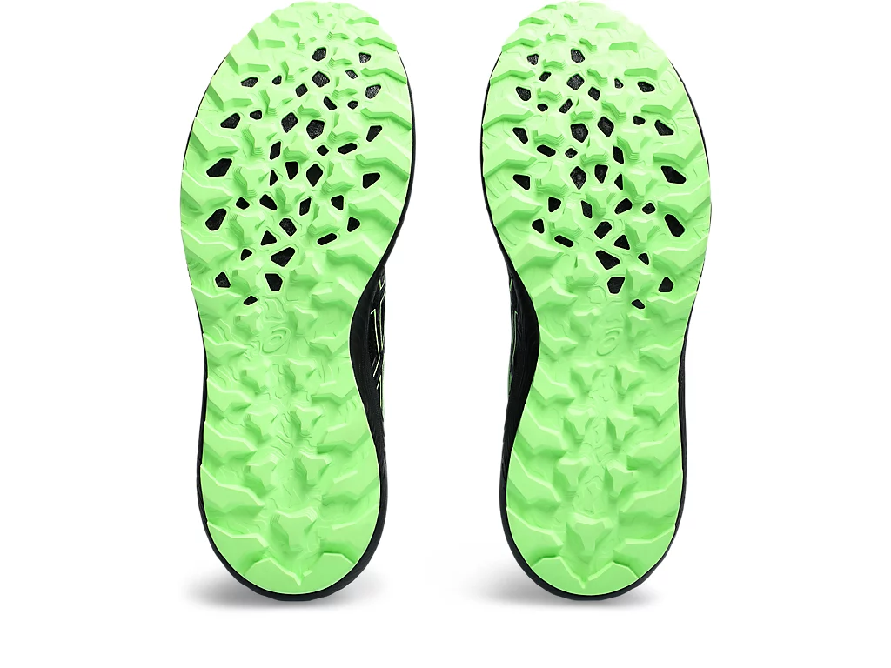

GEL-SONOMA™ 7 GTX
₱ 6,990.00
Colour: PIEDMONT BLACK/GREEN
143 ratings
Size:
Width: STANDARD (D)
Quantity:
1Details
The GEL-SONOMA™ 7 GTX shoe is designed for the great outdoors. It's formed with a GORE-TEX™ membrane that helps keep your feet warm and dry when you're running in great conditions.
Underfoot comfort stems from a full-length AMPLIFOAM™ midsole and GEL™ technology unit that's strategically placed where cushioning is needed.
Lastly, the trail-specific outsole is functional for providing advanced traction. Its pattern helps you experience a confident stride on the uphill and downhill sections of challenging terrain.